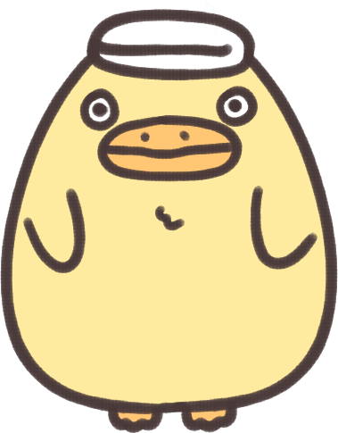

Home
Works
Store
Media
S
Homepage
Welcome to the world of Hayao Miyazaki
Studio Ghibli, Inc. (Japanese: 株式会社スタジオジブリ Hepburn: Kabushiki-gaisha Sutajio Jiburi) is a Japanese animation film studio based in Koganei, Tokyo, Japan. The studio is best known for its anime feature films, and has also produced several short films, television commercials, and one television film. It was founded on 15 June 1985, after the success of Nausicaä of the Valley of the Wind (1984), with funding by Tokuma Shoten.